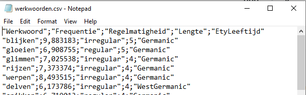

3 Data in R
Voor data-analyse hebben we data nodig. Datasets bevinden zich soms in packages, maar vaker moet je ze inlezen vanuit een extern databestand. In dit hoofdstuk bekijken welke soorten dataformaten we in R tegenkomen en hoe we data in R kunnen inlezen.
In deze cursus leer je werken met zo’n 100 veelgebruikte functies in R. Het is belangrijk om voor jezelf een goed overzicht te houden van deze functies. Werk hier actief aan door een eigen codeboek aan te maken. Voeg tijdens of na afloop van het bestuderen van dit hoofdstuk de codes toe aan jouw codeboek.
3.1 Datatabellen en vectoren
We kunnen data in R in verschillende formaten tegenkomen. Tijdens deze cursus krijgen we vooral te maken met datatabellen en vectoren. Een datatabel wordt in tidyverse een tibble genoemd en gaat in R ook wel door het leven onder de naam data.frame.1 Een datatabel bestaat uit rijen (de observaties) en kolommen (de variabelen) en doet daarmee erg denken aan een gewone tabel of spreadsheet zoals je dat misschien wel kent uit bijvoorbeeld Excel.
1 Het tidyverse is voor een groot deel ontwikkeld door de Nieuw-Zeelander Hadley Wickham. Het woord tibble schijnt te verwijzen naar de manier waarop in Nieuw-Zeeland table wordt uitgesproken.
Hieronder vind je een voorbeeld van een tibble met data uit het package wordbankr. Dit package geeft toegang tot Wordbank een grote database met daarin informatie over hoe de woordenschat van kinderen zich ontwikkelt in verschillende talen.2
2 Voor een uitgebreide beschrijving van deze data, zie de website van het Wordbank Project: https://wordbank.stanford.edu/
De data in deze database zijn verzameld aan de hand van de MacArthur-Bates Communicative Development Inventory (MB-CDI), een vragenlijst waarin ouders aangeven welke woorden hun kind op welke leeftijd kent. Informatie over alle beschikbare versies van deze vragenlijst in verschillende talen hebben we opgeslagen in de tibble met de naam wordbank_datasets.
wordbank_datasets# A tibble: 89 × 8
instrument_id language form form_type age_min age_max has_grammar
<dbl> <chr> <chr> <chr> <dbl> <dbl> <dbl>
1 1 British Sign Langu… WG WG 8 36 0
2 2 Cantonese WS WS 16 30 0
3 3 Croatian WG WG 8 16 0
4 4 Croatian WS WS 16 30 0
5 5 Danish WG WG 8 20 0
6 6 Danish WS WS 16 36 1
7 7 English (American) WG WG 8 18 0
8 8 English (American) WS WS 16 30 1
9 9 French (Quebecois) WG WG 8 16 0
10 10 French (Quebecois) WS WS 16 30 1
# ℹ 79 more rows
# ℹ 1 more variable: unilemma_coverage <dbl>Je kunt de inhoud van een datatabel bekijken door de naam van de tabel uit te voeren. Bij een tibble krijg je standaard de eerste tien rijen te zien. Het aantal kolommen (variabelen) dat je te zien krijgt is afhankelijk van de grootte van je scherm. Bovenaan de tibble kun je zien om hoeveel rijen en kolommen het gaat (hier 89 x 8). Onderaan wordt je verteld hoeveel rijen en welke variabelen er niet getoond zijn (hier bijvoorbeeld 79 rijen). Je kunt het aantal rijen en variabelen ook zichtbaar maken met de functies nrow() en ncol() respectievelijk.
nrow(wordbank_datasets)[1] 89ncol(wordbank_datasets)[1] 8Wil je de gehele datatabel zien (afgeraden bij heel grote bestanden) dan kun je de functie View() gebruiken. Er zal dan een tabblad geopend worden in RStudio waarin je de datatabel kunt bekijken.
View(wordbank_datasets)De weergave van de tibble in R vertelt je ook iets over de manier waarop R de variabelen uit de tibble ziet. Onder de namen van de variabelen (de bovenste regel) vind je namelijk tussen vishaken <> het type dat R heeft toegekend op basis van de datapunten in de variabele. Zo heeft de variabele language het type chr voor character (tekst) toegewezen gekregen en de variabele age_min het type int voor integer (geheel getal). Tabel 3.1 geeft een overzicht van een aantal veel voorkomende datatypes van variabelen in R.
| soort | naam in R | afkorting in R | voorbeeld | meetniveau |
|---|---|---|---|---|
| tekst, string | character | char, chr | “a”, “woord” | nominaal |
| boolean, waarheidswaarde | logical | logi, lgl | TRUE, FALSE |
nominaal |
| factor | factor | fct | Duits, Engels |
nominaal |
| geordende factor | ordered factor | ord | laag, hoog |
ordinaal |
| getal | numeric, double | num, dbl | 1, 2.5, 3.14 | numeriek |
| geheel getal | integer | int | 1, 2, 100 | numeriek |
Naast de datatabel zijn vectoren een veel voorkomende dataformaat in R. Een vector is een geordend rijtje van elementen van hetzelfde type. Een variabele uit een datatabel kunnen we bijvoorbeeld omzetten naar een vector met de functie pull().
languages <- pull(wordbank_datasets, language)Bovenstaande code wijst door het gebruik van de operator <- de inhoud van de variabele language toe aan een vector met de naam languages. Je kunt hier zelf vrijwel elke naam kiezen. Het is verstandig om namen te kiezen die betekenisvol zijn voor jezelf (ook nog als je je code een tijd later weer leest) of voor iemand anders die je code bekijkt. Namen als dataset1, datasetdef en datasetechtdefinitief zijn dus niet zo handig. Daarnaast is het voor de leesbaarheid fijn om consistent te zijn: gebruik alleen kleine letters (snake case) en scheid inhoudswoorden met een underscore _, dus bijv. wordbank_datasets.
Het resultaat van het uitvoeren van pull() is een vector met de naam languages met daarin de 89 namen van talen. Deze vector zal in RStudio in het venster rechtsboven onder het tabblad Environment verschijnen onder het kopje Values. In de Environment vind je een overzicht van alle datatabellen en vectoren die voor R toegankelijk zijn. Je kunt de namen van deze databronnen gebruiken in de code die je schrijft. Zo kunnen we de naam languages nu gebruiken als argument van functies. Laten we eerst kijken wat er in de vector zit. Hiervoor typen we alleen de naam van de vector:
languages [1] "British Sign Language" "Cantonese" "Croatian"
[4] "Croatian" "Danish" "Danish"
[7] "English (American)" "English (American)" "French (Quebecois)"
[10] "French (Quebecois)" "German" "Hebrew"
[13] "Hebrew" "Italian" "Italian"
[16] "Mandarin (Beijing)" "Mandarin (Beijing)" "Mandarin (Beijing)"
[19] "Norwegian" "Norwegian" "Russian"
[22] "Russian" "Slovak" "Slovak"
[25] "Spanish (Mexican)" "Spanish (Mexican)" "Swedish"
[28] "Swedish" "Turkish" "Turkish"
[31] "English (British)" "English (British)" "American Sign Language"
[34] "American Sign Language" "American Sign Language" "American Sign Language"
[37] "Greek (Cypriot)" "Kigiriama" "Kigiriama"
[40] "Kiswahili" "Kiswahili" "Czech"
[43] "English (Australian)" "English (British)" "Latvian"
[46] "Latvian" "Korean" "Korean"
[49] "French (French)" "French (French)" "Spanish (European)"
[52] "Spanish (European)" "Portuguese (European)" "Portuguese (European)"
[55] "Mandarin (Taiwanese)" "Mandarin (Taiwanese)" "English (Irish)"
[58] "Irish" "Finnish" "Dutch"
[61] "Dutch" "Dutch" "Dutch"
[64] "Dutch" "Dutch" "Dutch"
[67] "Hungarian" "Spanish (Argentinian)" "American Sign Language"
[70] "Spanish (Chilean)" "Spanish (Peruvian)" "Spanish (Peruvian)"
[73] "Persian" "Persian" "Finnish"
[76] "English (American)" "English (American)" "English (British)"
[79] "Arabic (Saudi)" "Arabic (Saudi)" "Arabic (Saudi)"
[82] "Estonian" "Catalan" "Korean"
[85] "Finnish" "Finnish" "Catalan"
[88] "Japanese" "Japanese" Het gaat hier om een opsomming van alle talen die voorkomen in de dataset wordbank_datasets. Het aantal elementen in de vector kunnen we vaststellen met de functie length() en het datatype van de vector met de functie class()
length(languages)[1] 89class(languages)[1] "character"Het gaat hier dus om een character vector die bestaat uit 89 elementen. Het type (de class) van de vector wordt toegepast op alle elementen in de vector ook als er oorspronkelijk elementen in zijn gestopt van een verschillend type (bijv. woorden en getallen). Dit zien we bijvoorbeeld als we aan R vragen wat het type is van onze eerder met de functie c() gemaakte vector.
ek_1988 <- c("Nederland", 1988, "plek 1")
class(ek_1988)[1] "character"Ondanks dat we een getal hebben toegevoegd aan onze vector is het type van de vector als geheel toch character. Wanneer we de vector laten zien, dan valt ook op dat er rond het oorspronkelijk getal 1988 nu aanhalingstekens staan. Het wordt door R dus gezien als een woord.
ek_1988[1] "Nederland" "1988" "plek 1" 3.2 Data inlezen
Data om te analyseren zijn vaak opgeslagen in databestanden. Deze bestanden kunnen een verschillend formaat (extensie) hebben. Veel voorkomende formaten (in deze cursus) zijn tekstbestanden (.txt) en csv-bestanden (.csv). CSV staat voor ‘comma separated values’ en geeft aan dat de waarden van variabelen (‘de cellen’ in een spreadsheet) van elkaar gescheiden zijn door scheidingstekens. Zoals de naam doet vermoeden is de komma hier het te verwachten scheidingsteken, maar verwarrend genoeg kan dit ook een puntkomma zijn (zie Figuur 3.1). Welk scheidingsteken wordt gebruikt hangt onder anderen af van de instellingen van je computer. Het is dus van belang om goed te bekijken met wat voor een bestand je te maken hebt voor je het gaat inlezen en ook na het inlezen goed te controleren of dit goed is gegaan.

Externe databestanden zul je eerst moeten inlezen in R voor je ermee kunt gaan werken. Hiervoor bestaan gelukkig verschillende functies in R, gespecificeerd voor het soort bestand waarmee je werkt. Die functies beginnen doorgaans met read. Binnen het tidyverse gebruiken we read-functies gevolgd door een underscore (read_). Deze functies lezen een specifiek soort databestand in als een tibble. Zo is er voor csv-bestanden een functie read_csv voor bestanden met een komma als scheidingsteken en een read_csv2 voor bestanden met een puntkomma als scheidingsteken. De functie read_delim() (voor read in delimited data file) is de algemene functie om databestanden in te lezen, waaronder tekstbestanden, en read_csv() en read_csv2() zijn specifieke versies hiervan waarbij het type delimiter (het scheidingsteken) is vastgelegd (dus read_csv() is onderliggend read_delim(file = , delim = ",")). Type maar eens ‘read_’ in je R-script en RStudio zal automatisch alle opties geven zowel binnen baseR als binnen het tidyverse (zie Figuur 3.2). Aan jou de taak om de juiste functie te vinden bij je databestand. Wanneer je werkt in een R-project zal de read_()-functie gaan zoeken in de map van het R-project (zie box Waar staat je databestand? verderop).
Soms is het handig om een in R-gecreëerde dataset op te slaan naar een databestand, zodat je het later of in een ander programma kunt gebruiken. Het opslaan van databestanden in R is eenvoudig. Er bestaat voor elke read_-functie namelijk een tegenhanger die begint met write_, bijv. write_csv. Wanneer je werkt in een R-project, hoef je de locatie wederom niet te specificeren. RStudio slaat het bestand automatisch op in de map van je project.
Het is belangrijk om altijd goed te controleren of het inlezen van je databestand is gelukt. Heb je inderdaad het aantal observaties en kolommen (variabelen) dat je verwacht. Zo niet, dan is er iets misgegaan. In onderstaand voorbeeld lezen we bijvoorbeeld het databestand wordbank_datasets.csv in met de functie read_csv2(), terwijl de datapunten niet gescheiden zijn door een puntkomma, maar door een komma (en dus read_csv() nodig is). Het resultaat laat zien dat we in plaats van 8 variabelen (en dus 8 kolommen), maar 1 variabele (1 kolom) hebben waarin alle informatie is samengepropt.
wordbank_datasets <- read_csv2(file = "_datasets/wordbank_datasets.csv")ℹ Using "','" as decimal and "'.'" as grouping mark. Use `read_delim()` for more control.Rows: 89 Columns: 1
── Column specification ────────────────────────────────────────────────────────
Delimiter: ";"
chr (1): instrument_id,language,form,form_type,age_min,age_max,has_grammar,u...
ℹ Use `spec()` to retrieve the full column specification for this data.
ℹ Specify the column types or set `show_col_types = FALSE` to quiet this message.wordbank_datasets# A tibble: 89 × 1
instrument_id,language,form,form_type,age_min,age_max,has_grammar,unilemma_…¹
<chr>
1 1,British Sign Language,WG,WG,8,36,0,0.95
2 2,Cantonese,WS,WS,16,30,0,0.95
3 3,Croatian,WG,WG,8,16,0,1
4 4,Croatian,WS,WS,16,30,0,1
5 5,Danish,WG,WG,8,20,0,1
6 6,Danish,WS,WS,16,36,1,0.93
7 7,English (American),WG,WG,8,18,0,1
8 8,English (American),WS,WS,16,30,1,1
9 9,French (Quebecois),WG,WG,8,16,0,1
10 10,French (Quebecois),WS,WS,16,30,1,0.99
# ℹ 79 more rows
# ℹ abbreviated name:
# ¹`instrument_id,language,form,form_type,age_min,age_max,has_grammar,unilemma_coverage`Dit moeten we herstellen voordat we verdergaan met de data-analyse. Bezuinig niet op de controle van deze stap. Je loopt anders geheid vast.
wordbank_datasets <- read_csv(file = "_datasets/wordbank_datasets.csv")Rows: 89 Columns: 8
── Column specification ────────────────────────────────────────────────────────
Delimiter: ","
chr (3): language, form, form_type
dbl (5): instrument_id, age_min, age_max, has_grammar, unilemma_coverage
ℹ Use `spec()` to retrieve the full column specification for this data.
ℹ Specify the column types or set `show_col_types = FALSE` to quiet this message.wordbank_datasets# A tibble: 89 × 8
instrument_id language form form_type age_min age_max has_grammar
<dbl> <chr> <chr> <chr> <dbl> <dbl> <dbl>
1 1 British Sign Langu… WG WG 8 36 0
2 2 Cantonese WS WS 16 30 0
3 3 Croatian WG WG 8 16 0
4 4 Croatian WS WS 16 30 0
5 5 Danish WG WG 8 20 0
6 6 Danish WS WS 16 36 1
7 7 English (American) WG WG 8 18 0
8 8 English (American) WS WS 16 30 1
9 9 French (Quebecois) WG WG 8 16 0
10 10 French (Quebecois) WS WS 16 30 1
# ℹ 79 more rows
# ℹ 1 more variable: unilemma_coverage <dbl>Om databestanden te kunnen inlezen in R, moet je normaal gesproken eerst de computer vertellen waar deze te vinden zijn. Wanneer de databestanden onderdeel zijn van een R-project, weet RStudio al waar het die bestanden moet vinden. RStudio kijkt namelijk automatisch in de map van je project. Dat is een groot voordeel van werken met een R-project. Je kunt dan werken met een relatief pad. In bovenstaand voorbeeld staan de databestanden binnen de map van het R-project in een map _datasets en door dit voor de naam van het bestand te plakken _datasets/wordbank_datasets.csv gaat R in de map van het R-project zoeken naar bestanden in de map _datasets. Wanneer je problemen ondervindt met relatieve paden kun je ook kiezen voor een absoluut pad. Hierbij geeft je de hele naam van de locatie op je computer, bijv. C://Peter/OBS/_datasets/wordbank_datasets.csv.
3.2.1 Variabelennamen aanpassen
Wanneer je het databestand goed hebt ingelezen is het eerste wat je moet doen de namen van de variabelen controleren. Zoals eerder gemeld, hanteren we voor variabelennamen snake_case: alleen kleine letters en scheiding van inhoudswoorden met een underscore _, dus bijv. wordbank_datasets. Dit is echter niet de enige manier waarop variabelennamen voorkomen. In de praktijk kun je echt vanalles verwachten. Zie bijvoorbeeld hieronder, waar we de namen van twee variabelen uit onze datatabel wordbank_datasets ter illustratie hebben aangepast. We gebruiken hier de functie head() om alleen een deel van de rijen zichtbaar te maken (hier maar 1):
head(wordbank_datasets_slechte_namen, n = 1) # A tibble: 1 × 8
InstrumentID language form `form type` age_min age_max has_grammar
<dbl> <chr> <chr> <chr> <dbl> <dbl> <dbl>
1 1 British Sign Langu… WG WG 8 36 0
# ℹ 1 more variable: unilemma_coverage <dbl>We kunnen ook de functie names() gebruiken:
names(wordbank_datasets_slechte_namen)[1] "InstrumentID" "language" "form"
[4] "form type" "age_min" "age_max"
[7] "has_grammar" "unilemma_coverage"We zien twee variabelen die een afwijkende naam hebben. InstrumentID gebruikt hoofdletters en geen _ om inhoudswoorden (instrument en id) te scheiden en form type heeft een spatie i.p.v. een underscore. Dat laatste is zeker iets om te vermijden, want dat kan allerlei ongemak opleveren. We kunnen deze namen handmatig aanpassen met de functie rename():
rename(.data = wordbank_datasets_slechte_namen,
instrument_id = InstrumentID,
form_type = `form type`)# A tibble: 89 × 8
instrument_id language form form_type age_min age_max has_grammar
<dbl> <chr> <chr> <chr> <dbl> <dbl> <dbl>
1 1 British Sign Langu… WG WG 8 36 0
2 2 Cantonese WS WS 16 30 0
3 3 Croatian WG WG 8 16 0
4 4 Croatian WS WS 16 30 0
5 5 Danish WG WG 8 20 0
6 6 Danish WS WS 16 36 1
7 7 English (American) WG WG 8 18 0
8 8 English (American) WS WS 16 30 1
9 9 French (Quebecois) WG WG 8 16 0
10 10 French (Quebecois) WS WS 16 30 1
# ℹ 79 more rows
# ℹ 1 more variable: unilemma_coverage <dbl>Bij rename() geven we als eerste argument .data de naam van de datatabel mee waarin we namen willen veranderen en vervolgens, gescheiden door komma’s de namen van de variabelen die we willen hernoemen. Hierbij geef je (verwarrend genoeg) eerst de nieuwe naam van de variabele en dan de oude naam. Variabelennamen met een spatie erin moet je tussen backticks ` ` zetten.
We zijn er nu nog niet. Met bovenstaande code hebben we de namen nog niet blijvend veranderd. Ze zijn alleen veranderd in de print out die je te zien krijgt in R. Dit kunnen we zien als we de datatabel nogmaals naar het scherm printen:
wordbank_datasets_slechte_namen# A tibble: 89 × 8
InstrumentID language form `form type` age_min age_max has_grammar
<dbl> <chr> <chr> <chr> <dbl> <dbl> <dbl>
1 1 British Sign Lang… WG WG 8 36 0
2 2 Cantonese WS WS 16 30 0
3 3 Croatian WG WG 8 16 0
4 4 Croatian WS WS 16 30 0
5 5 Danish WG WG 8 20 0
6 6 Danish WS WS 16 36 1
7 7 English (American) WG WG 8 18 0
8 8 English (American) WS WS 16 30 1
9 9 French (Quebecois) WG WG 8 16 0
10 10 French (Quebecois) WS WS 16 30 1
# ℹ 79 more rows
# ℹ 1 more variable: unilemma_coverage <dbl>Hier zien we nog steeds de oude namen. Om de namen blijvend te veranderen moeten we de verandering toewijzen aan de datatabel zelf met de operator <- die we eerder hebben gezien:
wordbank_datasets_slechte_namen <- rename(.data = wordbank_datasets_slechte_namen,
instrument_id = InstrumentID,
form_type = `form type`)
names(wordbank_datasets_slechte_namen)[1] "instrument_id" "language" "form"
[4] "form_type" "age_min" "age_max"
[7] "has_grammar" "unilemma_coverage"De functie rename() is goed te gebruiken als je maar een beperkt aantal namen moet aanpassen. Wanneer er echter veel (meer dan 3) namen moeten worden aangepast is het een beetje omslachtig. In dat geval kun je beter de functie clean_names() uit het package janitor gebruiken. Je kunt hiervoor het package als geheel laden of de functie aanroepen met janitor::clean_names(). Ook hier geldt dat je de output van deze functie weer moet toewijzen aan een datatabel om de verandering blijvend door te voeren. In onderstaand voorbeeld hebben we gekozen om de oorspronkelijk naam voor de datatabel (wordbank_datasets) weer te gebruiken, aangezien de slechte namen zijn aangepast.
wordbank_datasets <- janitor::clean_names(wordbank_datasets_slechte_namen)
names(wordbank_datasets)[1] "instrument_id" "language" "form"
[4] "form_type" "age_min" "age_max"
[7] "has_grammar" "unilemma_coverage"3.2.2 Type van variabelen aanpassen
Nu de variabelen allemaal een eigen kolom en een goede naam hebben, moeten we nog controleren of ze ook van het juiste type zijn. Bij het inlezen van de data doet R een educated guess naar het type van de variabelen op basis van de data die in de variabelen zitten. Zitten er getallen in dan zal het gaan voor dbl (of num, int) en wanneer er alleen tekst in zit dan voor char. In de meeste gevallen gaat dit goed, maar niet altijd.
Er is één ding om goed op te letten en dat is het feit dat we in statistische analyse categorische variabelen doorgaans factoren noemen. Factoren zijn categorische variabelen die een beperkt aantal terugkerende waarden kunnen aannemen. Die waarden noemen we levels. In R krijgen factoren het datatype factor.
Neem als voorbeeld de variabele language uit onze datatabel wordbank_datasets, die we eerder ook als vector languages hebben opgeslagen. In deze variabelen staan de talen van alle vragenlijsten die in de wordbank zitten opgesomd. We zien dat sommige talen meerdere keren voorkomen. Bij de eerste 10 observaties komen 4 talen 2 keer voor (Croatian, Danish, English (American) en French (Quebecois)):
wordbank_datasets# A tibble: 89 × 8
instrument_id language form form_type age_min age_max has_grammar
<dbl> <chr> <chr> <chr> <dbl> <dbl> <dbl>
1 1 British Sign Langu… WG WG 8 36 0
2 2 Cantonese WS WS 16 30 0
3 3 Croatian WG WG 8 16 0
4 4 Croatian WS WS 16 30 0
5 5 Danish WG WG 8 20 0
6 6 Danish WS WS 16 36 1
7 7 English (American) WG WG 8 18 0
8 8 English (American) WS WS 16 30 1
9 9 French (Quebecois) WG WG 8 16 0
10 10 French (Quebecois) WS WS 16 30 1
# ℹ 79 more rows
# ℹ 1 more variable: unilemma_coverage <dbl>Met de functie dinstinct() voor datatabellen of unique voor vectoren kunnen we laten zien dat er in de 89 observaties in de data 42 verschillende talen voorkomen:
distinct(.data = wordbank_datasets, language)# A tibble: 42 × 1
language
<chr>
1 British Sign Language
2 Cantonese
3 Croatian
4 Danish
5 English (American)
6 French (Quebecois)
7 German
8 Hebrew
9 Italian
10 Mandarin (Beijing)
# ℹ 32 more rowsunique(languages) [1] "British Sign Language" "Cantonese" "Croatian"
[4] "Danish" "English (American)" "French (Quebecois)"
[7] "German" "Hebrew" "Italian"
[10] "Mandarin (Beijing)" "Norwegian" "Russian"
[13] "Slovak" "Spanish (Mexican)" "Swedish"
[16] "Turkish" "English (British)" "American Sign Language"
[19] "Greek (Cypriot)" "Kigiriama" "Kiswahili"
[22] "Czech" "English (Australian)" "Latvian"
[25] "Korean" "French (French)" "Spanish (European)"
[28] "Portuguese (European)" "Mandarin (Taiwanese)" "English (Irish)"
[31] "Irish" "Finnish" "Dutch"
[34] "Hungarian" "Spanish (Argentinian)" "Spanish (Chilean)"
[37] "Spanish (Peruvian)" "Persian" "Arabic (Saudi)"
[40] "Estonian" "Catalan" "Japanese" Wanneer de variable language als type character wordt gezien dan missen we de overeenkomsten tussen deze terugkerende talen. Door er een factor van te maken waarin elke taal een level is maken we dit juist zichtbaar. Dit biedt later allerlei voordelen bij het maken van grafieken, zoals het makkelijker kunnen herordenen van levels, en het doen van statistische analyses. Het is dus verstandig om categorische variabelen om te zetten naar type factor.
Je kunt een variabele omzetten naar een factor met de functie as.factor().3 Deze zal de levels ordenen op alfabet. Om deze aanpassing te kunnen doen gebruiken we de veelgebruikte functie mutate() waarbij we weer de naam van de variabele eerst noemen en na de = wat we erin willen stoppen. Ook hier geldt weer: om de verandering blijvend te maken moeten we deze toewijzen aan de datatabel met <-.
3 Er bestaat ook een tidyverse-variant as_factor(). Deze functie zet variabelen ook om naar een factor, maar gebruikt de eerste observatie in de data als het eerste level.
wordbank_datasets <-
mutate(.data = wordbank_datasets,
language = as.factor(language))Om een snelle blik te werpen op hoe R de variabelen in onze datatabel ziet, kunnen we de functie str() voor structure gebruiken (het tidyverse-alternatief is glimpse()).4
4 De functie str() gebruikt types uit base R (dus bijv. num), terwijl glimpse() types uit het tidyverse gebruikt (dus <dbl>).
str(wordbank_datasets)tibble [89 × 8] (S3: tbl_df/tbl/data.frame)
$ instrument_id : num [1:89] 1 2 3 4 5 6 7 8 9 10 ...
$ language : Factor w/ 42 levels "American Sign Language",..: 3 4 6 6 8 8 10 10 17 17 ...
$ form : chr [1:89] "WG" "WS" "WG" "WS" ...
$ form_type : chr [1:89] "WG" "WS" "WG" "WS" ...
$ age_min : num [1:89] 8 16 8 16 8 16 8 16 8 16 ...
$ age_max : num [1:89] 36 30 16 30 20 36 18 30 16 30 ...
$ has_grammar : num [1:89] 0 0 0 0 0 1 0 1 0 1 ...
$ unilemma_coverage: num [1:89] 0.95 0.95 1 1 1 0.93 1 1 1 0.99 ...We zien dat language nu een factor is met 42 levels (zoveel talen als we hadden geteld) en het eerste level is American Sign Language, de naam die als eerste in het alfabet komt. Deze omzetting naar een factor zouden we ook moeten uitvoeren voor de andere variabelen van type character (form en form_type). Ook de variabele instrument_id komt hiervoor in aanmerking, want de getallen die hier zijn gebruikt als id voor de vragenlijst moeten we niet zien als getallen, maar als namen. Deze omzettingen kunnen we in een keer doen binnen de functie mutate() door de variabelen te scheiden met een komma. Voor de overzichtelijkheid van de code zetten we iedere omzetting op een eigen regel.
wordbank_datasets <-
mutate(.data = wordbank_datasets,
form = as.factor(form),
form_type = as.factor(form_type),
instrument_id = as.factor(instrument_id)
)
str(wordbank_datasets)tibble [89 × 8] (S3: tbl_df/tbl/data.frame)
$ instrument_id : Factor w/ 89 levels "1","2","3","4",..: 1 2 3 4 5 6 7 8 9 10 ...
$ language : Factor w/ 42 levels "American Sign Language",..: 3 4 6 6 8 8 10 10 17 17 ...
$ form : Factor w/ 24 levels "CDITwo","FormA",..: 17 22 17 22 17 22 17 22 17 22 ...
$ form_type : Factor w/ 2 levels "WG","WS": 1 2 1 2 1 2 1 2 1 2 ...
$ age_min : num [1:89] 8 16 8 16 8 16 8 16 8 16 ...
$ age_max : num [1:89] 36 30 16 30 20 36 18 30 16 30 ...
$ has_grammar : num [1:89] 0 0 0 0 0 1 0 1 0 1 ...
$ unilemma_coverage: num [1:89] 0.95 0.95 1 1 1 0.93 1 1 1 0.99 ...Let dus goed op: getallen zijn niet altijd getallen, maar kunnen ook als namen voor levels van een categorische variabele zijn gebruikt. Stel we maken een datatabel woordfrequenties aan met daarin de variabele frequentie van een aantal woorden. De woordfrequentie is door de onderzoeker gecodeerd als 1, 2 en 3 wat staat voor respectievelijk ‘laag frequent’, ‘midden frequent’ en ‘hoog frequent’.
woordfrequenties <- tibble(frequentie = c(1,3,1,1,2))
woordfrequenties# A tibble: 5 × 1
frequentie
<dbl>
1 1
2 3
3 1
4 1
5 2Omdat de waarden van de variabele frequentie getallen zijn, denkt R dat we hier te maken hebben met een numerieke variabele. We kunnen dit weer omzetten met de functie as.factor(), vervolgens kunnen we met de functie recode() de levels van deze factor expliciete namen geven. Wanneer we de datatabel nu weer bekijken dan zien we in plaats van getallen de namen van de levels. Dat maakt het inzichtelijker voor gebruikers van de data.
woordfrequenties <- mutate(woordfrequenties,
frequentie = as.factor(frequentie),
frequentie = fct_recode(frequentie,
laag = "1",
midden = "2",
hoog = "3")
)
woordfrequenties# A tibble: 5 × 1
frequentie
<fct>
1 laag
2 hoog
3 laag
4 laag
5 midden De functie mutate() komen we nog vaak tegen. We kunnen deze bijvoorbeeld ook gebruiken om een nieuwe variabele aan te maken uit bestaande variabelen. Zo zouden we de variabele age_range kunnen aanmaken die het leeftijdsbereik uitdrukt als het verschil tussen de minimumleeftijd (age_min) en de maximumleeftijd (age_max):
wordbank_datasets <-
mutate(wordbank_datasets,
age_range = age_max - age_min)
relocate(.data = wordbank_datasets,
age_range,
.after = age_max)# A tibble: 89 × 9
instrument_id language form form_type age_min age_max age_range has_grammar
<fct> <fct> <fct> <fct> <dbl> <dbl> <dbl> <dbl>
1 1 British … WG WG 8 36 28 0
2 2 Cantonese WS WS 16 30 14 0
3 3 Croatian WG WG 8 16 8 0
4 4 Croatian WS WS 16 30 14 0
5 5 Danish WG WG 8 20 12 0
6 6 Danish WS WS 16 36 20 1
7 7 English … WG WG 8 18 10 0
8 8 English … WS WS 16 30 14 1
9 9 French (… WG WG 8 16 8 0
10 10 French (… WS WS 16 30 14 1
# ℹ 79 more rows
# ℹ 1 more variable: unilemma_coverage <dbl>We maken hier met relocate() de nieuwe variabele zichtbaar direct achter de variabele age_max in de datatabel. Wanneer we dit niet doen dan zou deze achteraan komen. Je kunt .after (of .before) ook direct als argument aan mutate() meegeven.
3.3 Voorbeeldscript
Wanneer je begint met coderen is het vooral belangrijk dat je code werkt. Hoe je code precies tot het resultaat komt is nog van ondergeschikt belang. Het kan altijd eleganter of sneller. Toch is het verstandig om je vanaf het begin af aan een aantal zaken aan te leren die je code leesbaarder maken. Hier een aantal richtlijnen:
Goede code gebruikt:
- duidelijke namen voor datatabellen en vectoren, waarbij we gebruik maken van snake_case (dus
age_rangeen nietAgeRange); - spaties om operatoren, zoals
=en,(dusx = yenx, yi.p.vx=yenx,y); - nieuwe regels om de lengte van code te beperken, bijvoorbeeld door na een
,of<-een return te geven; - inspringing om aan te geven dat code op de huidige regel nog bij een vorige regel hoort en bijvoorbeeld argumenten van een functie op hetzelfde niveau te zetten.
Een goed script:
- heeft een heldere opbouw met eerst het aanroepen van packages, dan het inlezen van de data, het bewerken van variabelen en dan de overige dingen die je gaat doen;
- gebruikt witregels om codeblokjes te maken van regels code die bij elkaar horen en deze te scheiden van andere code met een andere functie;
- heeft een goede toelichting op de werking van een blokje code, hierbij gebruik je
#aan het begin van de regel. Je kunt#ook gebruiken om op een regel commentaar toe te voegen.Rnegeert alles wat na een#staat en probeert dit dus niet uit te voeren.
Hieronder een voorbeeldscript gebaseerd op de code uit dit hoofdstuk:
# Aanroepen benodigde packages
library(tidyverse)
# Bekijken dataset
wordbank_datasets
# Aanpassen type van variabelen
wordbank_datasets <-
mutate(.data = wordbank_datasets,
language = as.factor(language),
form = as.factor(form),
form_type = as.factor(form_type),
instrument_id = as.factor(instrument_id)
)
# Aanmaken aparte vector met alle talen in de dataset
languages <- pull(wordbank_datasets, language)3.4 Omgaan met errors
R neemt alles wat je typt heel letterlijk. Je zult dus heel precies moeten werken, anders geeft R je een foutmelding. In onderstaand voorbeeld zijn we bijvoorbeeld de ‘s’ vergeten aan het eind van ‘dataset’. We vragen R dus om wordbank_dataset te laten zien, terwijl we wordbank_datasets bedoelen. Het is een klein verschil, maar voor R voldoende om een error te geven.
wordbank_datasetError in eval(expr, envir, enclos): object 'wordbank_dataset' not foundErrors horen bij coderen. Ze kunnen ontstaan door typefouten of door het verkeerd gebruik van de regels van de taal (bijv. het vergeten van een argument dat nodig is om een functie uit te kunnen voeren). Errors kunnen heel frustrerend zijn en soms ook veel tijd kosten om op te lossen. Probeer rustig te blijven, haal diep adem en probeer uit te vinden waar R over klaagt. Vaak zit er in de error-melding wel een aanwijzing wat er mis is. Wanneer R meldt ‘object nog found’ dan gaat het meestal of om een typefout in de naam van het object dat je wilt gebruiken of om een variabele in een datatabel, terwijl je R nog niet hebt verteld in een specifieke datatabel te zoeken.
Naast errors geeft R ook waarschuwingen (warnings). De ernst daarvan is vaak wat moeilijker te bepalen. Soms kun je die voorbij laten gaan, maar soms moet je er ook echt iets mee. Ook voor warnings geldt dat het verstandig is om ze goed te bekijken, want vaak staat er een aanwijzing in. In onderstaand voorbeeld proberen we met de functie mean() het gemiddelde van te berekenen van een vector die niet uit getallen bestaat. De functie mean() vraagt echter om getallen. R wijst ons hierop in de warning en geeft ook aan wat het resultaat hiervan is: je krijgt ontbrekende data NAs (voor not available).
mean(languages)Warning in mean.default(languages): argument is not numeric or logical:
returning NA[1] NAZoals gezegd, errors horen bij coderen. Je moet er simpelweg mee leren leven. Laat je niet gek maken en weet dat je niet alleen bent. De kans is groot dat iemand anders dezelfde error ook heeft gehad en er al een oplossing voor heeft gevonden. Stel dus vragen of kopieer je error-melding naar Google om uit te vinden wat het probleem nu eigenlijk is en welke oplossingen er bestaan. Websites als stackoverflow bieden vaak hulp.
Verder leren
- In Hoofdstuk 1 van SfL (Winter, 2019) wordt de basis van
R(base R) verder uitgelegd. Ter voorbereiding op het eerste practicum is het prettig om vast wat commando’s te proberen uit dit hoofdstuk. Werk verder in het script dat je in het vorige hoofdstuk hebt aangemaakt.5 Werk nu hoofdstuk 1 door t/m sectie 1.8. Typ de commando’s in de grijze vakken over en voer ze uit. In sectie 1.2 doe je dit direct in de R-console, vanaf sectie 1.3 (en in alle volgende practica!) in een script. Zie sectie 1.15 voor handige shortcuts die je hierbij kunt gebruiken. Controleer steeds weer of je dezelfde output krijgt als in het boek.
5 Je kunt eventueel ook https://rdrr.io/snippets gebruiken voor het uitvoeren van R-code, mocht de installatie op je eigen computer niet werken. We kunnen dan tijdens een practicum proberen R en RStudio werkend te krijgen op je computer.
Nu zou je in staat moeten zijn Practicum 1 te maken.